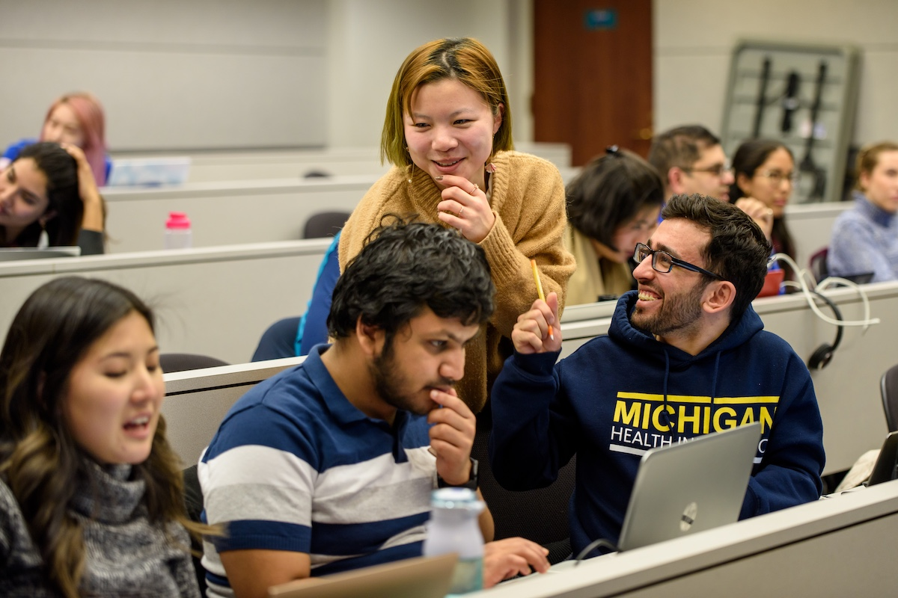

During Your Experience
Keep Your Project Moving
As your project develops, priorities may change and new challenges may arise. Review progress with your team, keep your partner informed, and use feedback to adjust your next steps.

Practices for Active Projects
Track Progress Together
Maintain a shared task list with responsibilities and deadlines. During team check-ins, review completed work, upcoming tasks, and anything blocking progress.
Keep Your Partner Informed
Share updates at the frequency you agreed on. Explain what you have completed, what comes next, and where you need input or a decision.
Respond to Feedback
Ask questions to understand feedback before making changes. Agree with your partner on priorities and record how decisions affect the project plan.
Address Challenges Early
Discuss concerns respectfully before they grow. If a request changes the project scope, review its impact on your timeline and team capacity with your partner. Contact your instructor or ELO when you need additional support.
Team Check-In Questions
Use these questions during regular team meetings. Record decisions and assign a person and deadline to each follow-up action.
- What have we completed since our last meeting?
- What is our next priority?
- Is anything blocking our progress?
- What feedback or decisions do we need from our partner?
- Is the workload manageable and fairly distributed?
- What have we learned, and what should we adjust?
When Your Project Changes
If a new request affects your timeline or deliverables, discuss the change with your team and partner before committing to additional work.
- Clarify the request and why it matters.
- Review its impact on your time, skills, and resources.
- Agree on what to prioritize, postpone, or adjust.
- Document the updated plan and share it with everyone involved.
Resources to Support Your Progress
- Project Management Worksheet — Revisit your project scope, team roles, and timeline when reviewing progress or discussing changes.
- Ginsberg Center Campus-Community Partnerships Toolkit — Revisit guidance on respectful partnerships when reflecting on communication and collaboration.
Ask for Support
If your team cannot resolve a concern about project expectations, team responsibilities, or partner communication, contact your instructor or the Engaged Learning Office. Explain the issue, what you have tried, and what guidance you need.